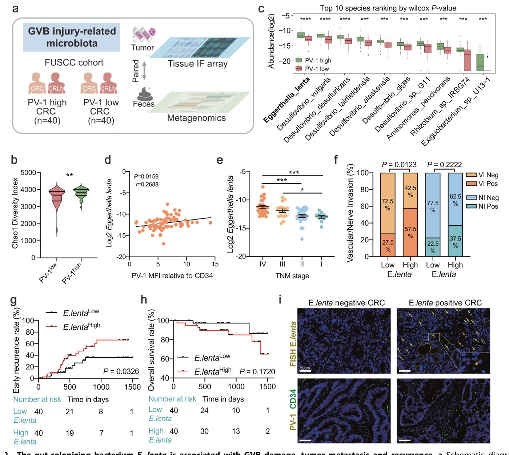
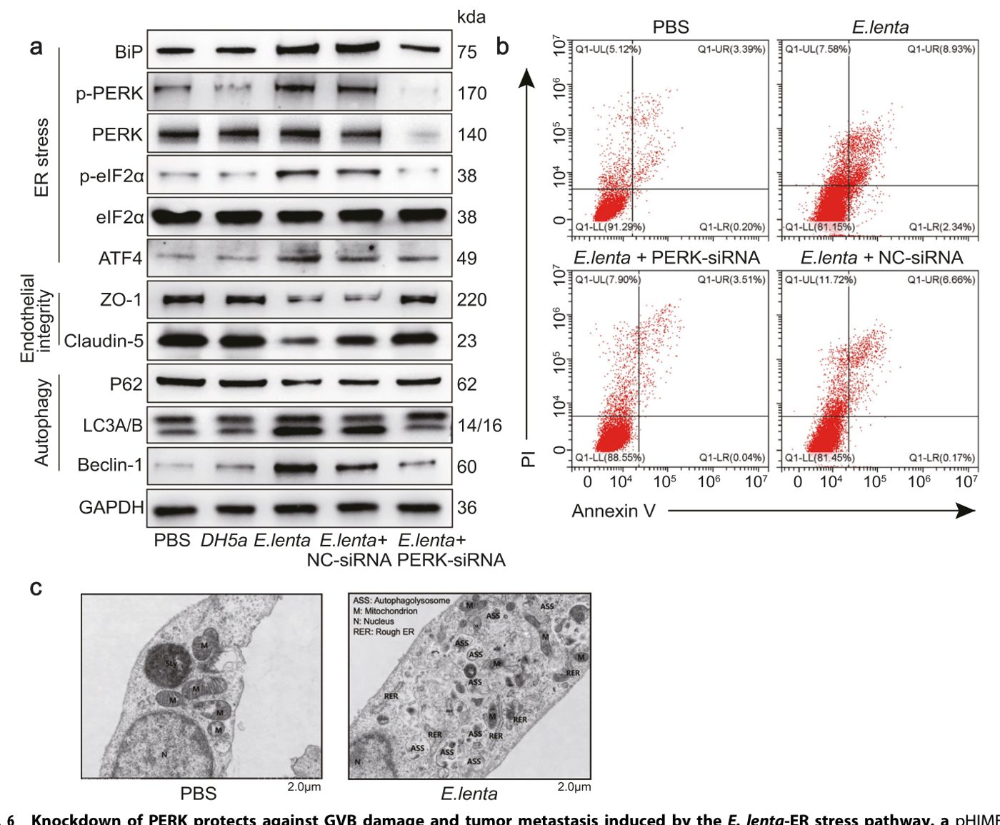
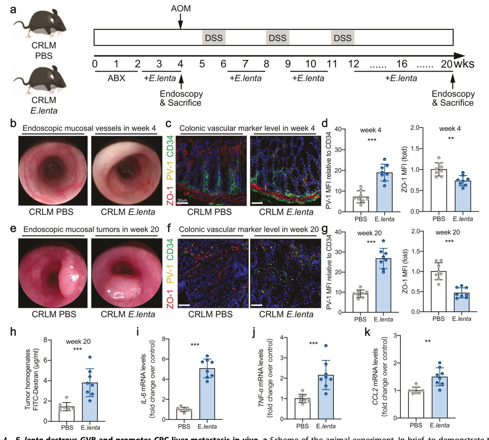
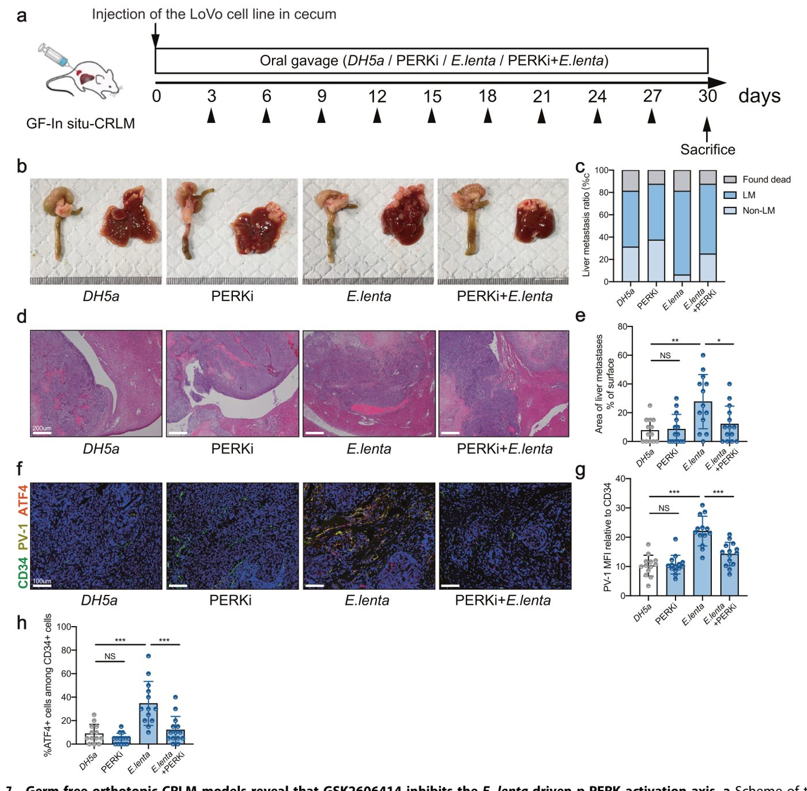

Бактерия в кишечнике помогает раку толстой кишки метастазировать в печень

Рак толстой кишки часто дает метастазы в печень, используя сосудистую систему как транспорт. Исследователи обнаружили, что бактерия Eggerthella lenta повреждает защитный барьер сосудов кишечника. Это облегчает выход раковых клеток в кровь и их дальнейшее распространение по организму. Понимание этого механизма открывает новые пути для контроля метастазирования.
Главное
- Eggerthella lenta повреждает сосудистый барьер кишечника через активацию стресса эндоплазматического ретикулума.
- Высокая концентрация E. lenta в кишечнике коррелирует с риском метастазирования и ранним рецидивом рака.
- Подавление PERK-пути предотвращает разрушение плотных контактов эндотелия и замедляет распространение опухоли.
Подробнее
Исследователи проанализировали образцы тканей 147 пациентов с колоректальным раком (КРР) и здоровых добровольцев. Выяснилось, что у пациентов с метастазами в печень уровень белка PV-1, маркера повреждения сосудистого барьера кишечника (GVB), значительно выше. Метагеномный анализ показал, что именно в этих тканях активно размножается бактерия Eggerthella lenta.
В экспериментах на клеточных культурах и мышах было установлено, что E. lenta прикрепляется к эндотелиальным клеткам сосудов. Это активирует стресс эндоплазматического ретикулума (ЭР) через TLR4-зависимый путь, что ведет к разрушению плотных контактов между клетками. В результате барьер становится проницаемым для опухолевых клеток. Подавление белка PERK, ключевого звена стресса ЭР, помогает восстановить целостность сосудистой стенки и снизить миграцию раковых клеток.
Ограничения
Работа основана на корреляционном анализе клинических данных и экспериментах на моделях мышей, поэтому требует клинических испытаний для подтверждения эффективности терапии.
Полный перевод статьи
Резюме
Отдаленное метастазирование является основной причиной смерти при колоректальном раке (КРР), а кишечный сосудистый барьер (GVB) служит первым препятствием для гематогенного распространения. Чтобы выяснить, влияет ли функция GVB непосредственно на бактерии, ассоциированные с метастазированием, мы проанализировали две когорты, включающие 20 здоровых добровольцев, 82 пациента с КРР без метастазов и 65 пациентов с метастазами в печень или легкие. Были использованы мультиомиксные подходы (метагеномное секвенирование и секвенирование РНК единичных клеток) и модели гнотобиотических мышей для изучения кишечных микробов, связанных с нарушением GVB и метастазированием. У пациентов с метастазами КРР в печень наблюдалось нарушение GVB и бактериальная колонизация в местах метастазов. Бактерия Eggerthella lenta была обогащена у пациентов с повышенной экспрессией белка-1, ассоциированного с плазмалеммальными везикулами (PV-1), маркера повреждения GVB, а ее обилие коррелировало с метастазированием и рецидивами.
Важно
Eggerthella lenta ассоциирована с повреждением GVB (маркер PV-1) и метастазированием КРР, что подтверждено на когорте из 167 человек и моделях гнотобиотических мышей.
В экспериментах in vitro и in vivo E. lenta нарушала целостность эндотелиальных плотных контактов и GVB, усиливая миграцию клеток КРР и метастазирование в печень. Механистически E. lenta адгезировалась к эндотелиальным клеткам и активировала стресс эндоплазматического ретикулума (ЭР) через TLR4-зависимый путь, способствуя аутофагии и апоптозу. Нокаут PERK ослаблял стресс ЭР, предотвращал аутофагию и апоптоз, а также снижал экспрессию ZO-1 и Claudin-5, индуцированную E. lenta. Эти данные подчеркивают клинический потенциал стратегий, нацеленных на микробиоту, и ингибирования PERK при лечении метастазов КРР, ассоциированных с E. lenta.
Колоректальный рак (КРР) остается одной из ведущих причин смертности от рака во всем мире, при этом метастазирование является основным фактором неблагоприятного прогноза. Печень — наиболее частое и критическое место отдаленного метастазирования при КРР, и понимание механизмов, движущих печеночной диссеминацией, является приоритетной задачей. Метастазирование — это сложный многоступенчатый процесс, а интравазация опухолевых клеток через слой эндотелия сосудов в кровоток — критический ранний этап. В последние годы кишечный сосудистый барьер (GVB), специализированный эндотелиальный барьер, расположенный непосредственно под кишечным эпителием, был идентифицирован как важнейший привратник. Он регулирует обмен веществ и клеток между просветом кишечника и кровотоком, представляя собой решающий контрольно-пропускной пункт для потенциального метастатического распространения из первичной опухоли.
Целостность GVB жизненно важна для предотвращения патологической транслокации. Нарушение GVB, отмечаемое повышенной экспрессией белка-1, ассоциированного с плазмалеммальными везикулами (PV-1), приводит к повышению проницаемости сосудов. Этот дефект участвует не только в облегчении проникновения опухолевых клеток в портальный кровоток, но и в формировании метастатической ниши. Хотя антиангиогенная терапия была краеугольным камнем стратегии лечения, ее парадоксальные эффекты — включая создание гипоксического, воспалительного микроокружения, которое может усиливать инвазивность опухоли и химиорезистентность — подчеркивают необходимость альтернативных подходов. Новые данные свидетельствуют о том, что нормализация сосудов опухоли и, в частности, восстановление целостности GVB могут быть более эффективными, чем текущие методы лечения, в подавлении метастазирования, особенно в печень.
Пояснение
GVB — это барьер из эндотелиальных клеток, который контролирует прохождение веществ из кишечника в кровь; его повреждение (маркер PV-1) открывает путь для метастазирования.
Кишечная микробиота, находящаяся в прямом контакте с GVB, является ключевым модулятором его функции. Роль микробиоты в ремоделировании и функционировании кишечных сосудов хорошо установлена. Примечательно, что специфические патогенные бактерии могут напрямую нарушать целостность GVB. Например, Salmonella typhimurium может преодолевать GVB, вмешиваясь в эндотелиальный сигнальный путь Wnt/β-catenin, способствуя диссеминации бактерий в печень. Наиболее убедительно, недавнее исследование выявило проинвазивный штамм Escherichia coli (C17), который вызывает повреждение GVB, облегчает транслокацию бактерий в печень и обогащается в печеночных метастазах, где он колокализуется с пролиферирующими раковыми клетками. Эти данные устанавливают прямую связь между специфическим микробным агентом, разрушением GVB и метастазированием КРР в печень (CRLM).
Несмотря на эти достижения, механизмы, с помощью которых кишечная микробиота регулирует целостность GVB, влияя на метастазирование КРР, особенно в печень, остаются плохо изученными. Идентификация основных патогенных бактерий, ответственных за повреждение GVB, и детальное понимание их проканцерогенных механизмов являются критическими пробелами в знаниях в этой области. Поэтому данное исследование было направлено на скрининг и характеристику основных кишечных микробов, связанных с нарушением GVB, а также на выяснение их специфических ролей и механизмов в стимулировании метастазирования КРР в печень.
Чтобы исследовать состояние GVB в сосудах толстой кишки, мы провели ретроспективный анализ (со средним периодом наблюдения 2,1 года) формалин-фиксированных парафинизированных (FFPE) образцов резекции толстой кишки человека, полученных от пациентов с CRC во время постановки диагноза (с отдаленными метастазами или без них, n = 80) и от здоровых субъектов (n = 20) из обучающей когорты Онкологического центра Фуданьского университета в Шанхае (FUSCC) (Рис. 1a; Таблица SN). Во-первых, мы наблюдали, что средняя интенсивность флуоресценции (MFI) PV-1 (относительно CD34) в эндотелиальных клетках была выше у пациентов с CRC, чем в контрольных образцах здоровых людей, после исключения неспецифических реакций окрашивания. Примечательно, что уровень PV-1 был также выше в нераковых тканях пациентов с CRC, чем в тканях здоровых контролей, что предполагает, что GVB нарушен не только внутри опухолевой ткани, но и в прилегающей здоровой слизистой оболочке (Рис. 1b, d).
Важно
Уровень PV-1, маркера нарушения GVB, значительно повышен в сосудах толстой кишки у пациентов с CRC, особенно при наличии метастазов в печень (CRLM).
Чтобы оценить, коррелируют ли более высокие уровни PV-1 у пациентов с CRC с отдаленными метастазами, мы разделили образцы пациентов с CRC на тех, у кого развились (n = 28), и тех, у кого не развились (n = 52) метастазы в печень. Этот анализ показал, что по сравнению с пациентами без метастазов, у пациентов с CRLM уровень PV-1 был выше (Рис. 1c, d), что предполагает наличие нарушения GVB у пациентов с CRLM. Согласуясь с предыдущими данными, представленными Bertocchi et al., демонстрирующими, что вызванное E. coli нарушение GVB способствует метастазированию CRC в печень и что повышенная экспрессия PV-1 связана с отдаленным рецидивом, наши данные показали аналогичные наблюдения у пациентов с обогащением Eggerthella lenta (Рис. 1a–d). Эти согласованные результаты для различных видов бактерий подчеркивают более широкую значимость нарушения GVB как общего патогенного механизма при метастазировании CRC.
Пояснение
GVB (gut-vascular barrier) — барьер между кишечником и сосудистой системой, предотвращающий проникновение бактерий и токсинов в кровоток; PV-1 — белок, являющийся структурным компонентом диафрагм фенестр эндотелия, повышение которого свидетельствует о нарушении целостности этого барьера.
Кишечная бактерия E. lenta ассоциирована с повреждением GVB, метастазированием и рецидивированием опухолей. Для лучшего понимания роли микробиома в повреждении GVB было проведено окрашивание 16S rDNA с использованием конфокальной микроскопии для маркеров PV-1 и CD34. По сравнению с пациентами с неметастатическим колоректальным раком (КРР), ткани опухолей у пациентов с метастазами в печень (CRLM) были более интенсивно колонизированы бактериями, что сопровождалось повышенным уровнем PV-1 (Рис. 1d). Далее мы разделили пациентов на группы «PV-1 high» (n = 40) и «PV-1 low» (n = 40) в соответствии с медианным уровнем PV-1 относительно CD34 и проанализировали метагеномное секвенирование парных образцов кала с целью характеристики таксономии микробиоты кишечника у пациентов с легким и тяжелым повреждением GVB (Рис. 2a). Одномерный анализ показал, что статус PV-1 был значимо связан со стадией метастазирования в лимфоузлы (TNM), сосудистой инвазией, выживаемостью и рецидивированием (Таблица S2). Эти корреляции оставались значимыми после поправки на конфаундеры (возраст, ИМТ и пол).


Важно
Высокий уровень PV-1 коррелирует с тяжелым повреждением GVB, сосудистой инвазией и худшим прогнозом, что подтверждается метагеномным анализом.
По сравнению с группой «PV-1 low», оценки альфа-разнообразия кишечной микробиоты по Chao1 были значимо выше в группе «PV-1 high» (FDR = 0.0083, t-тест) (Рис. 2b; Таблица S3). Впоследствии мы провели анализ дифференциальной представленности с использованием тестов Вилкоксона для идентификации таксонов, присутствующих в образцах с разным уровнем экспрессии PV-1. На уровне видов E. lenta и виды рода Desulfovibrio (Desulfovibrio vulgaris, Desulfovibrio desulfuricans, Desulfovibrio fairfieldensis и др.) были более представлены в группе «PV-1 high», что указывает на их положительную ассоциацию с активированным микроокружением при повреждении GVB при КРР (Рис. 2c; Таблица S4). Среди этих видов относительная представленность E. lenta была самой высокой в группе «PV-1 high» с наиболее значимым различием по сравнению с группой «PV-1 low» (Таблицы S4 и S5). Корреляционный анализ также выявил, что представленность E. lenta в кале значимо положительно коррелировала с экспрессией PV-1 в сосудах опухоли (r = 0.2688; P = 0.0159; Рис. 2d; корреляции между относительной представленностью 10 основных видов и PV-1 приведены в Таблице S6).
Пояснение
GVB (Gut-Vascular Barrier) — кишечно-сосудистый барьер, структура, предотвращающая попадание бактерий из кишечника в кровоток; его повреждение способствует системному воспалению и метастазированию.
Таким образом, мы предположили, что E. lenta может быть вовлечена в повреждение GVB, и провели последующие валидационные эксперименты. Чтобы определить, связана ли E. lenta с прогрессированием опухоли, мы сравнили относительную представленность E. lenta у пациентов с разными стадиями TNM. Ожидаемо, E. lenta была значимо обогащена у пациентов с поздними стадиями заболевания (стадии III/IV по TNM, особенно стадия IV с отдаленными метастазами в печень) по сравнению с пациентами на ранних стадиях (стадии I/II) (Рис. 2e). Согласно медианной относительной представленности E. lenta, мы дополнительно разделили пациентов на группы «E. lenta high» (n = 40) и «E. lenta low» (n = 40) (Таблица S7). Примечательно, что по сравнению с группой «E. lenta low», доля пациентов с положительной сосудистой инвазией была значимо выше в группе «E. lenta high» (Рис. 2f). Для оценки влияния инфекции E. lenta на клиническое течение мы оценили, связана ли повышенная представленность E. lenta с ранним рецидивом и общей выживаемостью (Рис. 2g, h). Кривые Каплана-Мейера показали, что высокая представленность E. lenta значимо ассоциирована с повышенной частотой раннего рецидива (P = 0.0326). В отношении общей выживаемости инфекция E. lenta приводила к худшему прогнозу, хотя разница между группами не была статистически значимой (P = 0.172). Флуоресцентная гибридизация in situ (FISH) использовалась для обнаружения E. lenta и экспрессии PV-1 и CD34 в тканях КРР (когорта FUSCC). Как показано на Рис. 2i, E. lenta проникает в ткани КРР и часто сопровождается сверхэкспрессией PV-1. В совокупности наши результаты подчеркивают, что кишечная бактерия E. lenta ассоциирована с повреждением GVB, метастазированием и рецидивированием опухоли.
Чтобы определить, существует ли разница в распространенности E. lenta у пациентов с метастазами в печень и метастазами в легкие, мы расширили наши валидационные эксперименты, включив независимую когорту из FUSCC, состоящую из 30 пациентов с неметастатическим КРР, 20 пациентов с метастазами в печень и 17 пациентов с метастазами в легкие (Рис. S1a; демографические данные приведены в Таблице S1). Посредством секвенирования 16S rRNA и анализа совместной локализации методом иммунофлуоресценции (IF) в тканях первичной опухоли мы продемонстрировали, что по сравнению с неметастатическими контролями, обе группы КРР с метастазами в печень и легкие демонстрировали значимо повышенные уровни E. lenta, экспрессии сосудистого эндотелиального PV-1 и активации ATF4 (в соответствии с результатами на Рис. 6) (Рис. S1b–e). Примечательно, что значимых различий между подгруппами с метастазами в печень и легкие не наблюдалось (P > 0.05 для всех параметров).


Осторожно
Исследование проведено на клинических образцах пациентов, что указывает на корреляцию, но не доказывает прямую причинно-следственную связь между E. lenta и метастазированием.
Используя стратификацию на основе медианы, мы разделили всю когорту на группы с высокой и низкой представленностью E. lenta (n = 33 против 34) и группы с высокой и низкой экспрессией PV-1 (n = 33 против 34). Анализ χ² не выявил значимой ассоциации между органотропностью метастазов (печень против легких) и представленностью E. lenta (P = 0.9421) или уровнем экспрессии PV-1 (P = 0.9689). Важно отметить, что мы выявили значимую положительную корреляцию между представленностью E. lenta и экспрессией сосудистого PV-1 во всей валидационной когорте (Рис. S1f, коэффициент Пирсона r = 0.2631, P = 0.0315). Кроме того, по сравнению с пациентами с низкой колонизацией E. lenta, у пациентов с высокой колонизацией E. lenta наблюдалась значимо повышенная экспрессия ATF4 (P = 0.0004 по тесту χ²). Эти комплексные результаты валидации подтверждают надежность наших первоначальных выводов, одновременно решая потенциальные вопросы относительно предрасположенности к органоспецифическому метастазированию.
Далее мы приобрели стандартный штамм анаэробной грамположительной бактерии E. lenta (ATCC, № 25559; Рис. 3a) для подтверждения её участия в контроле проницаемости GVB и эндоваскулярной миграции клеток КРР in vitro. При совместном культивировании первичных эндотелиальных клеток микрососудов кишечника человека (pHIMEC) с E. lenta, как и ожидалось, добавление E. lenta приводило к уменьшению количества канальцев как через 8 ч, так и через 12 ч (Рис. 3b, c). Мы дополнительно исследовали, влияет ли сама E. lenta или продукты её секреции на жизнеспособность pHIMEC. Как показано на Рис. 3d, снижение жизнеспособности pHIMEC наблюдалось при воздействии живой E. lenta, тогда как обработка инактивированной нагреванием E. lenta и супернатантом E. lenta не оказывала значимого ингибирующего эффекта.

Важно
E. lenta снижает жизнеспособность эндотелиальных клеток и нарушает формирование канальцев, при этом эффект зависит от присутствия живых бактерий.
Что касается взаимодействий бактерий с хозяином, адгезия патогена к клеткам хозяина часто является первым шагом при регуляции хозяина живыми бактериями. Далее мы измерили способность E. lenta и контрольного штамма E. coli DH5α прикрепляться к pHIMEC в планшетах Transwell в анаэробных условиях. E. lenta продемонстрировала высокую способность к адгезии к pHIMEC (81,2% адгезии бактериальных клеток при разведении 1:10), в то время как DH5α показала низкую способность к адгезии к этим клеткам (только 9,7% бактериальных клеток оставались связанными при разведении 1:10). Чтобы предметно изучить патологическую значимость адгезии E. lenta, мы систематически исследовали бактериальную адгезию с помощью сканирующей электронной микроскопии (СЭМ). E. lenta культивировали совместно с pHIMEC (разведения 1:10 и 1:100; 3 независимых биологических повтора) в течение 4 ч, после чего образцы тщательно промывали PBS (4 раза по 5 минут) перед визуализацией. СЭМ четко показала, что большое количество клеток E. lenta прикрепляется к поверхности эндотелия дозозависимым образом (Рис. S2). Эти данные напрямую демонстрируют, что E. lenta прочно и стабильно прикрепляется к эндотелиальным клеткам в условиях, имитирующих среду кишечных микрососудов.
Поскольку известно, что Wnt/β-катениновый сигнальный путь связан с пролиферацией и миграцией эндотелиальных клеток, была изучена экспрессия Wnt1, β-катенина и PV-1 в pHIMEC. Совместное культивирование с E. lenta приводило к значительному снижению экспрессии Wnt1 и β-катенина в pHIMEC, тогда как экспрессия маркера повреждения GVB — PV-1 — увеличивалась (Рис. 3e). Для оценки влияния E. lenta на проницаемость эндотелиального монослоя была изучена трансэндотелиальная инвазия раковых клеток (HCT-116) (Рис. 3f). По сравнению с pHIMEC, обработанными PBS, значительно больше клеток HCT-116 мигрировало через монослои pHIMEC, обработанные E. lenta (Рис. 3g, h). Изменения проницаемости эндотелиального монослоя после обработки E. lenta также были выявлены путем измерения прохождения меченного FITC декстрана через монослои pHIMEC. По сравнению с клетками, обработанными PBS, обработка pHIMEC с помощью E. lenta значительно увеличивала прохождение флуоресцентного зонда через эндотелиальный слой (Рис. 3i). Окрашивание методом ИФ выявило заметное снижение уровня винкулина и ZO-1 в монослоях pHIMEC после обработки E. lenta, но не после обработки PBS (Рис. 3j). В совокупности эти результаты позволяют предположить, что E. lenta способна прикрепляться к эндотелиальным клеткам и разрушать их плотные контакты, способствуя эндоваскулярной миграции клеток КРР.
Пояснение
GVB (Gut-Vascular Barrier) — кишечно-сосудистый барьер, аналог гематоэнцефалического барьера, ограничивающий проникновение бактерий и токсинов из кишечника в кровоток.
Чтобы продемонстрировать влияние E. lenta на эндотелиальные барьеры in vivo, мы вводили мышам, получавшим антибиотики широкого спектра действия (Abx), живую культуру E. lenta или PBS в течение 2 недель, после чего создавали модели колоректального рака (КРР) AOM/DSS и модели метастазирования в печень до 20-й недели, как описано в разделе «Материалы и методы» (Рис. 4a). Как и ожидалось, двухнедельное введение E. lenta перед созданием опухолевой модели приводило к значительному повреждению сосудистой структуры толстой кишки, повышению экспрессии эндотелиального PV-1 и снижению экспрессии ZO-1 (Рис. 4b–d). После создания модели КРР (20-я неделя) мы также обнаружили повышенную экспрессию PV-1 и сниженную экспрессию ZO-1 в опухолях толстой кишки в группе, получавшей E. lenta, по сравнению с группой PBS (после исключения неспецифических реакций окрашивания); эти изменения наблюдались еще до появления признаков отдаленного метастазирования (Рис. 4e–g). Мышам внутривенно вводили FITC-декстран, и в тканях опухоли у мышей, получавших E. lenta, было выявлено значительное просачивание FITC-декстрана (Рис. 4h).


Важно
Введение E. lenta повреждает эндотелиальный барьер, повышая проницаемость сосудов и экспрессию PV-1, что предшествует метастазированию.
Интересно, что, хотя количество опухолей кишечника увеличилось после воздействия E. lenta, это изменение не было статистически значимым (Рис. SN). Наши механистические исследования показали, что E. lenta в первую очередь воздействует на эндотелиальные клетки через пути стресса эндоплазматического ретикулума (ЭР), а не путем прямого регулирования пролиферации или выживаемости опухолевых клеток. Для подтверждения этого мы провели дополнительные эксперименты по совместному культивированию с органоидами КРР. Воздействие E. lenta (при множественности заражения (MOI) 1:1000 в течение 12 ч) не вызывало существенных изменений жизнеспособности органоидов (P = 0,89) или их морфологической целостности (Рис. SN), что подтверждает нашу гипотезу о том, что прометастатические эффекты E. lenta опосредованы разрушением сосудистого барьера, а не прямой модуляцией опухолевых клеток. Затем мы оценили, изменяются ли уровни воспалительных цитокинов и хемокинов. Наши результаты показали, что воздействие E. lenta вызывало значительное увеличение экспрессии генов IL-6, TNF-α и CCL-2 в опухолях толстой кишки у мышей (Рис. 4i–k).
Пояснение
MOI (multiplicity of infection) — соотношение количества инфекционных агентов (бактерий) к количеству клеток-мишеней в культуре.
Чтобы дополнительно определить, может ли воздействие E. lenta способствовать метастазированию опухоли, мы расширили нашу экспериментальную систему, используя ортотопические модели CRLM (Рис. 7a). Результаты показали, что инфекция E. lenta значительно увеличивала метастатическую нагрузку на печень за счет увеличения как доли мышей, у которых развились метастазы в печень, так и общей площади поверхности метастатических очагов (Рис. 7b–e). В совокупности наши результаты свидетельствуют о том, что E. lenta может разрушать GVB и способствовать метастазированию КРР в печень in vivo.


Осторожно
Исследование проводилось на мышиных моделях; результаты требуют осторожной экстраполяции на человека.
Для изучения регуляторных механизмов, лежащих в основе влияния E. lenta на опухолевые эндотелиальные клетки и GVB, было проведено секвенирование РНК одиночных клеток (scRNA-seq) и сортировка клеток пяти образцов тканей колоректального рака (КРР), положительных по E. lenta, и пяти образцов тканей КРР, отрицательных по E. lenta (Рис. 5a, b). Ожидаемо, уровни PV-1 в опухолевых сосудах были значительно выше у пациентов, положительных по E. lenta, чем у пациентов, отрицательных по E. lenta (Рис. 5c). После удаления низкокачественных клеток (см. раздел «Материалы и методы») для биологического анализа было отобрано 97 257 клеток. После нормализации экспрессии генов и анализа главных компонент мы использовали графовую кластеризацию для разделения клеток, которые в дальнейшем были отнесены к 11 известным клеточным линиям на основе маркерных генов (Рис. 5d, e): эпителиальные клетки (маркер EPCAM), эндотелиальные клетки (маркеры PECAM1, CDH5, VWF, RAMP2 и CLDN5), T/NK-клетки (маркеры CD3D и NKG7), B-клетки (маркеры MS4A1 и CD79A), плазматические клетки (маркер MZB1), фибробласты (маркер COL3A1), нейтрофилы (маркер FCGR3B), миелоидные клетки (маркер LYZ), тучные клетки (маркер TPSB2), пучковые клетки (маркер SH2D6) и мукозальные энтеральные глиальные клетки (маркер PLP1).

Важно
Анализ scRNA-seq 97 257 клеток выявил 11 клеточных типов, при этом у пациентов с E. lenta наблюдалось значительное повышение уровня PV-1 в опухолевых сосудах. [!tip] scRNA-seq (секвенирование РНК одиночных клеток) — метод, позволяющий изучать активность генов в каждой отдельной клетке, что дает возможность увидеть редкие типы клеток и их специфические состояния.
Анализ генной онтологии (GO) для всех клеток показал, что в группе, положительной по E. lenta, наблюдалось значительное обогащение путей, специфичных для эндотелиальных клеток, включая «активацию эндотелиальных клеток» (коэффициент обогащения (EF) = 5,0306, FDR = 0,0119), «регуляцию развития эндотелиальных клеток» (EF = 3,9061, FDR = 0,0171) и «положительную регуляцию апоптотического процесса эндотелиальных клеток» (EF = 3,228, FDR = 0,0239) (Рис. SN S4a, b и Таблица SN S11). В других типах клеток, хотя мы и наблюдали снижение доли эпителиальных клеток в образцах, положительных по E. lenta, это, вероятно, отражает вторичные эффекты нарушения кишечного барьера и эндотелия. Далее мы сосредоточились на различиях в экспрессии генов в эндотелиальных клетках между двумя группами пациентов. При пороговом значении abs(avg_log2FC) > 0,5 и P-значении < 0,05 было определено 216 дифференциально экспрессируемых генов (DEG) в группе КРР, положительной по E. lenta, по сравнению с контрольной группой (Рис. 5f; Таблица SN S8). Биологические процессы GO, связанные с генами, экспрессия которых была повышена в опухолевых эндотелиальных клетках из группы КРР, положительной по E. lenta, были в значительной степени связаны со стрессом эндоплазматического ретикулума (ЭР) и аутофагией (Рис. 5g; Таблица SN S9). В совокупности результаты scRNA-seq показали, что E. lenta может регулировать пути стресса ЭР и аутофагии в опухолевых эндотелиальных клетках.
Чтобы идентифицировать патогенный компонент(ы), опосредующий индукцию стресса ЭР, мы провели эксперименты по обработке с использованием промытых E. lenta или супернатантов культуры E. lenta. Как показано на Рис. SN S5a, сама E. lenta индуцировала ответы стресса ЭР (о чем свидетельствует повышение уровня p-PERK) и активацию аутофагии (увеличение Beclin-1) в клетках pHIMEC, тогда как супернатант культуры сам по себе оказывал минимальное воздействие. Примечательно, что СЭМ (Рис. SN S2) подтвердила прямое физическое взаимодействие между E. lenta и сосудистыми эндотелиальными клетками. Эти данные свидетельствуют о том, что наблюдаемый эффект опосредуют поверхностно-ассоциированные компоненты, а не секретируемые метаболиты. Учитывая установленную роль TLR4 в распознавании бактерий, мы исследовали его участие в этом процессе с использованием специфического ингибитора TAK-242. Как показано на Рис. SN S5b, предварительная обработка TAK-242 обращала вызванные E. lenta изменения в экспрессии маркеров стресса ЭР (p-PERK и p-eIF2α) и активации аутофагии в pHIMEC. Важно отметить, что ни контрольные бактерии DH5α, ни TAK-242 по отдельности не вызывали значительных ответов стресса ЭР. Это селективное ингибирование подтверждает, что TLR4 является ключевым рецептором, опосредующим эффекты E. lenta на ответы эндотелиального стресса.
Важно
E. lenta вызывает стресс ЭР и аутофагию в эндотелиальных клетках через взаимодействие поверхностных белков с рецептором TLR4, что блокируется ингибитором TAK-242. [!warning] Исследование проведено на клетках pHIMEC (in vitro); корреляция между колонизацией E. lenta и стрессом ЭР в тканях человека требует дальнейшего подтверждения причинно-следственной связи.
Для дальнейшей валидации этих механистических выводов в клинически значимом контексте мы исследовали маркеры стресса ЭР в тканях КРР человека, стратифицированных по статусу колонизации E. lenta. Иммуногистохимическое окрашивание показало, что по сравнению с тканями, отрицательными по E. lenta, ткани КРР, положительные по E. lenta, демонстрировали значительно более высокую экспрессию как BiP, так и p-eIF2α (Рис. SN S6). Эти результаты предоставили прямые доказательства in vivo того, что колонизация E. lenta связана с повышенным стрессом ЭР в микроокружении опухоли, что убедительно подтверждает наши наблюдения in vitro и усиливает трансляционную значимость оси TLR4–стресс ЭР при метастазировании КРР, ассоциированном с E. lenta.
На основании полученных данных омиксного анализа мы проанализировали экспрессию белков, связанных со стрессом эндоплазматического ретикулума (ЭР) и аутофагией, в pHIMECs. Вестерн-блоттинг показал, что по сравнению с обработкой E. coli DH5α или PBS, воздействие E. lenta приводило к повышению экспрессии BiP, p-PERK, p-eIF2α, ATF4, LC3A/B и Beclin-1, а также к снижению экспрессии P62, ZO-1 и Claudin-5 в клетках pHIMECs (Рис. 6a). Кроме того, обработка E. lenta значимо индуцировала апоптоз в pHIMECs (Рис. 6b). Электронная микроскопия выявила формирование аутофагосом в pHIMECs после воздействия E. lenta (Рис. 6c). Эти данные свидетельствуют о том, что стресс ЭР и аутофагия/апоптоз активировались после обработки pHIMECs бактериями E. lenta. Известно, что стресс ЭР повышает киназную активность p-PERK, способствуя фосфорилированию eIF2α, что приводит к подавлению синтеза белка и роста клеток. Мы дополнительно использовали РНК-интерференцию для нокдауна PERK в pHIMECs и повторно оценили влияние E. lenta на клетки с пониженным уровнем PERK. Результаты показали, что siRNA к PERK нивелировала индуцированные E. lenta стресс ЭР, аутофагию и апоптоз, а экспрессия белков BiP, p-eIF2α, ATF4, LC3A/B, Beclin-1, ZO-1 и Claudin-5 была восстановлена (Рис. 6a, b), что указывает на то, что стресс ЭР ответственен за снижение уровня белков, связанных с аутофагией и плотными контактами в pHIMECs.
Важно
Нокдаун PERK предотвращает вызванные E. lenta стресс ЭР, аутофагию и апоптоз, восстанавливая целостность плотных контактов (ZO-1, Claudin-5) в клетках pHIMECs.
Для строгой валидации функциональной роли сигнального пути PERK в метастазировании, индуцированном E. lenta, мы расширили нашу экспериментальную систему, используя ортотопические модели CRLM (Рис. 7a). Наши результаты показали, что инфекция E. lenta значимо увеличивала метастатическую нагрузку на печень (Рис. 7b–e), повышала экспрессию PV-1 в эндотелиальных клетках сосудов и сопровождалась активацией маркера стресса ЭР — ATF4 (Рис. 7f–h). Совместная терапия с GSK2606414 нивелировала эти эффекты. При этом монотерапия GSK2606414 не оказывала значимого влияния на метастазирование, целостность GVB или маркеры стресса ЭР. Эти данные предоставляют причинно-следственные доказательства того, что сигнальный путь PERK выступает критическим эффектором стресса ЭР, вызванного E. lenta, способствуя прогрессированию метастазов. С точки зрения терапевтической эффективности, GSK2606414 специфически воздействует на ось «бактериальная инфекция — PERK», что подчеркивает его потенциал для клинического применения в целях предотвращения метастазирования у пациентов с колоректальным раком (CRC) и дисбиозом кишечника.
Пояснение
GSK2606414 — это селективный ингибитор киназы PERK, блокирующий передачу сигналов стресса ЭР. GVB (gut-vascular barrier) — барьер между кишечником и кровотоком, нарушение которого способствует метастазированию.
GVB является важной анатомической структурой для поддержания гомеостаза и защитной компартментализации у здоровых людей. Нарушение целостности GVB может способствовать эктопической колонизации кишечными бактериями или метастазированию колоректального рака (КРР) в печень. Предыдущие исследования подтвердили, что кишечные бактерии являются одними из ключевых факторов, вызывающих нарушение GVB, что служит предпосылкой для развития неалкогольного стеатогепатита или метастазирования КРР в печень. Некоторые исследования также показали, что специфические патогены, такие как S. typhimurium, E. coli C17 и Fusobacterium nucleatum, могут вызывать нарушение GVB, тогда как Akkermansia muciniphila может восстанавливать GVB in vivo и in vitro. Однако, насколько нам известно, ни одно исследование не характеризовало микробиом кишечника и не анализировало ключевые бактерии у пациентов с метастазами КРР в печень (CRLM) или тяжелым нарушением GVB.
Важно
У пациентов с высоким уровнем PV-1, указывающим на тяжелое нарушение GVB, выявлено повышенное содержание E. lenta и видов рода Desulfovibrio, что коррелирует с прогрессированием заболевания и ранним рецидивом.
Здесь мы показали, что у пациентов с высокими уровнями PV-1, что свидетельствует о тяжелом нарушении GVB, наблюдалось более высокое содержание E. lenta и видов рода Desulfovibrio, чем у пациентов с низкими уровнями PV-1. Примечательно, что наиболее представленные бактерии с дифференциальной численностью у пациентов с разными уровнями PV-1 не включали бактерии, которые, как сообщалось ранее, вызывают нарушение GVB в моделях на животных. Поэтому мы предположили, что другие ключевые патогены могут быть ответственны за нарушение GVB у пациентов с CRLM. Наш анализ методом FISH тканей опухолей, полученных от пациентов с CRLM, подтвердил обогащение E. lenta в местах нарушения GVB. На основании этих данных мы провели дальнейший анализ и обнаружили, что высокая численность E. lenta ассоциирована с более поздними стадиями заболевания, более выраженной сосудистой или нервной инвазией и повышенной частотой раннего рецидива, что предполагает потенциальную роль E. lenta в метастазировании КРР.
Пояснение
FISH (флуоресцентная гибридизация in situ) — метод визуализации специфических последовательностей ДНК или РНК непосредственно в клетках или тканях с помощью флуоресцентных зондов.
E. lenta — это анаэробная грамположительная палочка, которая обычно колонизирует пищеварительный тракт человека. Однако многие клинические данные свидетельствуют о том, что E. lenta может проникать через кишечный барьер, вызывая тяжелую бактериемию, а также воспаление экстраинтестинальных органов при патологических состояниях. Интересно, что в отчете о клиническом случае от 2010 года описывалась полимикробная инфекция кровотока, вызванная E. lenta и D. desulfuricans, оба из которых в нашем исследовании входили в число наиболее представленных видов в группе с высоким уровнем PV-1. Наши эксперименты in vitro показали, что воздействие E. lenta нарушает жизнеспособность эндотелиальных клеток микрососудов кишечника человека (HIMEC), а также межклеточные плотные контакты, что приводит к повышению проницаемости эндотелиального монослоя. Наши эксперименты in vivo продемонстрировали, что нарушение GVB под действием E. lenta создает критическую преметастатическую нишу для клеток КРР и значительно способствует метастазированию КРР в печень у безмикробных мышей.
Осторожно
Исследование основано на сочетании клинических данных и экспериментов in vitro/in vivo; хотя E. lenta способствует метастазированию, корреляция не всегда означает прямую причинно-следственную связь во всех случаях.
В соответствии с нашими результатами, Bai и соавторы сообщили об обогащении E. lenta у мышей, подвергшихся воздействию сигаретного дыма, с нарушенным кишечным барьером, что предполагает, что влияние E. lenta на нарушение кишечного барьера может проявляться в различных патофизиологических процессах. Механистически мы показали, что уровень экспрессии PV-1 в эндотелиальных клетках в образцах опухолей от E. lenta-положительных пациентов был намного выше, чем у E. lenta-отрицательных пациентов. Гиперактивация ответа на перегрузку эндоплазматического ретикулума (ЭР) и сверхэкспрессия маркеров сосудистых нарушений наблюдались в эндотелиальных клетках опухоли из группы E. lenta-положительных пациентов. Мы подтвердили активацию путей стресса ЭР и аутофагии, а также снижение уровня белков, связанных с адгезией, в HIMEC после воздействия E. lenta, и эти эффекты могли быть обращены вспять с помощью РНК-интерференции PERK. Согласно предыдущим исследованиям, численность E. lenta сильно ассоциирована с воспалением в кишечнике и вокруг него. Alexander и соавторы сообщили, что E. lenta может индуцировать активацию кишечных Th17-клеток Rorc-зависимым образом и усугублять колит у мышей. Balakrishnan и соавторы сообщили, что E. lenta может увеличивать количество CXCL5- и CD4-положительных Т-клеток, а также В-клеток, продуцирующих интерлейкин-17 и интерферон-γ, вызывая системное воспаление, подобное старению. Здесь мы описываем новую форму дисфункции эндотелиальных клеток сосудов, индуцированную E. lenta, опосредованную прямым контактом с бактериями, которую можно ограничить путем ингибирования активации PERK. Примечательно, что помимо E. lenta, другие кишечные бактерии также участвуют в метастазировании КРР. Например, E. coli C17 нарушает GVB и модулирует передачу сигналов WNT/β-катенин, тогда как F. nucleatum активирует этот путь через FadA. Отсутствие обогащения E. coli в нашей когорте первичных опухолей не противоречит предыдущим выводам. Как продемонстрировали Bertocchi и соавторы, E. coli C17 может перемещаться из кишечника в печень для создания преметастатической ниши, не обязательно сохраняясь на обнаруживаемых уровнях в первичной опухоли при резекции. Таким образом, наши данные не исключают роль E. coli в метастазировании КРР; скорее, они предполагают, что множество различных видов бактерий, включая E. lenta, могут способствовать метастазированию в печень посредством конвергентных или взаимодополняющих механизмов. В отличие от WNT-зависимых путей, Рис. 6 Нокдаун PERK защищает от повреждения GVB и метастазирования опухоли, индуцированного путем стресса ЭР, вызванного E. lenta. a pHIMEC обрабатывали PBS, E. coli DH5α или E. lenta вместе с PERK-siRNA, а затем анализировали методом вестерн-блоттинга на уровни белков стресса ЭР, целостности эндотелия и маркеров аутофагии. b Окрашивание pHIMEC аннексином V/PI после обработки E. lenta вместе с PERK-siRNA анализировали с помощью набора для обнаружения апоптоза Annexin V-PI методом проточной цитометрии. c После обработки PBS или E. lenta pHIMEC визуализировали с помощью просвечивающей электронной микроскопии. N — ядро, RER — шероховатый эндоплазматический ретикулум, M — митохондрия, AS — аутолизосома, SLy — вторичная лизосома.
Как и в случае с другими бактериями, наши результаты показывают, что E. lenta нарушает GVB и способствует метастазированию колоректального рака (КРР) в печень через специфический TLR4-зависимый путь стресса эндоплазматического ретикулума (ЭР)/аутофагии, без прямого участия канонического WNT-сигнального пути. Хотя E. lenta не стимулировала пролиферацию клеток КРР напрямую, мы не можем полностью исключить прямое влияние на миграцию опухолевых клеток. Тем не менее, наши данные демонстрируют, что E. lenta нарушает GVB, и этого нарушения достаточно для усиления трансэндотелиальной миграции клеток КРР. Более того, в нашей модели внутривенного метастазирования колонизация E. lenta способствовала метастазированию в печень при отсутствии прямого контакта бактерий с опухолевыми клетками. Таким образом, мы предполагаем, что нарушение GVB является первичным механизмом, лежащим в основе метастазирования, ассоциированного с E. lenta. Будущие исследования должны напрямую изучить, могут ли E. lenta или ее метаболиты усиливать миграцию клеток КРР независимо от эндотелиальных клеток.
Важно
E. lenta способствует метастазированию КРР в печень, нарушая GVB через путь PERK/стресс ЭР, что усиливает трансэндотелиальную миграцию опухолевых клеток.
Наши данные in vitro показали, что E. lenta напрямую снижает экспрессию белков плотных контактов через путь PERK/стресс ЭР. Однако мы не можем исключить возможность того, что гибель эндотелиальных клеток (происходящая уже через 8–12 ч) также способствует повышению проницаемости. Потеря отдельных эндотелиальных клеток создает физические разрывы, которые могут облегчить прохождение опухолевых клеток независимо от целостности плотных контактов. Кроме того, E. lenta может нарушать барьер кишечного эпителия, на что указывают наши данные scRNA-seq, демонстрирующие снижение численности эпителиальных клеток и снижение экспрессии генов эпителиальных соединений. Таким образом, суммарный эффект на GVB in vivo, вероятно, отражает сочетание прямого нарушения эндотелиальных контактов, гибели эндотелиальных клеток и потенциальных косвенных эффектов от повреждения эпителия. Будущие исследования с использованием генетических или фармакологических инструментов для разделения гибели клеток и потери контактов необходимы для полного выяснения индивидуального вклада этих факторов. В заключение, данное исследование впервые демонстрирует, что E. lenta способствует метастазированию КРР в печень путем нарушения GVB. E. lenta индуцирует стресс ЭР и аутофагию в сосудистых эндотелиальных клетках, повышает проницаемость GVB и создает преметастатическую нишу для клеток КРР. Всплески численности E. lenta являются одним из признаков дисбиоза кишечника у пациентов с метастазами КРР в печень. Следовательно, воздействие на E. lenta или путь стресса ЭР в GVB может стать потенциальной стратегией предотвращения метастазирования КРР в печень.
Хотя наше текущее исследование установило путь стресса ЭР как критический медиатор нарушения GVB, вызванного E. lenta, будущие исследования с применением таргетного протеомного анализа (например, профилирования липопротеинов) и подходов функционального мутагенеза будут необходимы для идентификации специфических бактериальных компонентов, ответственных за этот патогенный механизм. Идентификация специфических факторов вирулентности может открыть новые терапевтические мишени для предотвращения метастазирования, вызванного бактериями, у пациентов с КРР. Предварительная обработка антибиотиками или безмикробные условия могут нарушить базовую барьерную функцию и снизить микробную конкуренцию, потенциально повышая чувствительность кишечника к E. lenta. Тем не менее, согласованные данные in vitro в этом исследовании подтверждают прямой патогенный эффект. Относительно короткий период наблюдения (в среднем 2,1 года) не позволяет сделать выводы о долгосрочной выживаемости или позднем метастазировании; расширенное наблюдение продолжается и будет представлено отдельно. Хотя более глубокое изучение перекрестных взаимодействий эндотелия и иммунной системы с использованием наших данных scRNA-seq могло бы быть информативным, текущее исследование было сосредоточено на прямом ответе эндотелия. Будущие исследования со специализированным иммунным профилированием позволят выяснить, косвенно ли E. lenta ремоделирует микроокружение через иммунные клетки. Кроме того, хотя наши данные scRNA-seq выявили обогащение транскриптами, связанными со стрессом ЭР, в эндотелиальных клетках пациентов с высоким уровнем E. lenta, а эксперименты in vitro подтвердили активацию пути PERK и функциональную значимость, мы не смогли провести иммуногистохимическую валидацию маркеров стресса ЭР в тканях пациентов из-за ограниченной доступности образцов и технических сложностей, связанных с окрашиванием p-PERK в срезах FFPE. Будущие проспективные когорты со специализированным сбором тканей потребуются для подтверждения пространственной локализации активации стресса ЭР in situ. Наконец, специфический поверхностный лиганд E. lenta, взаимодействующий с TLR4, еще предстоит идентифицировать, но генетическая труднодоступность этой бактерии исключила такой анализ в данном исследовании.
Осторожно
Ограничения включают невозможность валидации маркеров стресса ЭР в тканях пациентов и необходимость дальнейшего поиска специфических бактериальных лигандов.
Участие пациентов и общественности: Пациенты и/или общественность не участвовали в планировании, проведении, отчетности или распространении этого исследования.
Согласие пациентов на публикацию: Письменное информированное согласие было получено от всех субъектов до взятия образцов.
Образцы тканей толстой кишки FFPE и парные образцы кала от пациентов со спорадическим колоректальным раком (КРР) и здоровых добровольцев были получены из Онкологического центра Фуданьского университета в Шанхае, Китай (когорта FUSCC). После скрининга на соответствие критериям включения и исключения в исследование было включено 100 подходящих субъектов, включая 20 здоровых добровольцев, 52 пациента с предоперационным КРР без отдаленных метастазов и 28 предоперационных пациентов с метастазами КРР в печень (CRLM). Была набрана независимая когорта из FUSCC, состоящая из 30 пациентов с неметастатическим КРР, 20 пациентов с CRLM и 17 пациентов с КРР с метастазами в легкие. Дополнительно во время операции были собраны свежие ткани опухоли от 10 пациентов с КРР (когорта scRNA-seq). Ткани FFPE (нормальные, параканцерозные и опухолевые) использовались для ИФ-окрашивания. Образцы кала собирали до операции в стерильные пробирки, а затем хранили при –80 °C до проведения метагеномного скрининга. Свежие образцы опухолевой ткани были получены для scRNA-seq. Ни один из участников не получал антибиотики или пробиотики в течение одного месяца до включения в исследование. Пациенты со спорадическим КРР исключались на основании следующих критериев: семейный анамнез КРР, анамнез воспалительных заболеваний кишечника, синдром раздраженного кишечника, наличие других сопутствующих злокачественных опухолей, а также забор стула не перед колоноскопией или проведение неоадъювантной терапии до забора стула. Набранные пациенты с КРР были разделены на группу КРР (без отдаленных метастазов) и группу CRLM на основании наличия метастазов в печени, а также на группу с высоким уровнем PV-1 и группу с низким уровнем PV-1 в соответствии с медианным уровнем экспрессии PV-1 относительно CD34. В группу здорового контроля были набраны добровольцы, у которых после скрининговой колоноскопии не было выявлено опухолей желудочно-кишечного тракта. Клинико-патологические характеристики пациентов с КРР включали возраст, пол, индекс массы тела, стадию TNM, размер опухоли, дифференцировку опухоли, сосудистую инвазию, невральную инвазию, выживаемость и рецидив опухоли. Клиническая информация о пациентах представлена в Таблице S1.
Важно
В исследование включено 100 пациентов с КРР и CRLM, а также 20 здоровых лиц; клинические данные и образцы (ткани и кал) были систематизированы для анализа метагенома и экспрессии PV-1.
Экспериментальные протоколы были одобрены Институциональным комитетом по уходу и использованию животных Онкологического центра Фуданьского университета, и эксперименты на мышах проводились в соответствии с рекомендациями Национальных институтов здравоохранения по уходу и использованию лабораторных животных (№ FUSCC-IACUC-S2023-0002). Мыши C57BL/6J, свободные от специфических патогенов (SPF), были приобретены у Shanghai SLAC Laboratory Animal Co., Ltd. Все мыши содержались в SPF-виварии в Shanghai SLAC Laboratory Animal Co., Ltd. с неограниченным доступом к корму и воде.
Протокол 1. Восьминедельные самцы C57BL/6J были рандомизированы на две группы: контрольную группу CRLM и группу CRLM + E. lenta. После адаптации в течение одной недели мыши получали антибиотический коктейль (Abx) через питьевую воду (0,2 г/л ампициллина, неомицина и метронидазола, и 0,1 г/л ванкомицина) в течение двух недель для истощения микробиоты кишечника. Затем мышам вводили через зонд 10⁹ колониеобразующих единиц (на мышь) живой E. lenta, суспендированной в PBS, или только PBS в течение 14 дней подряд. После введения ДНК из образцов кала (0,1 г на мышь) экстрагировали с использованием набора PowerFecal Pro DNA Kit (QIAamp). Общее количество копий генов ДНК впоследствии оценивали с помощью qPCR для каждого образца кала, чтобы определить относительное содержание E. lenta. На 4-й неделе после введения некоторых мышей умерщвляли (восемь животных в группе) для сбора сыворотки и ткани толстой кишки для анализа. После завершения вышеуказанной обработки через зонд еще восьми мышам в каждой группе внутрибрюшинно вводили 10 мг/кг массы тела азоксиметана (AOM; Sigma, США). Через 7 дней мышам, получившим AOM, давали декстрансульфат натрия (DSS) (1,5% масс./об.) в питьевой воде в течение 7 дней подряд. После обработки DSS мышам давали восстановиться в течение 14 дней. Этот график повторяли в течение 3 циклов. В течение каждого интервала восстановления мышам вводили живые штаммы E. lenta или PBS через зонд.
Пояснение
qPCR (количественная ПЦР) — метод амплификации ДНК, позволяющий точно измерить количество копий конкретного гена в образце в режиме реального времени.
Протокол 2. Ортотопические модели CRLM: мы создали мышей линии nude, свободных от микробов, путем инъекций клеток LoVo в брыжеечный треугольник слепой кишки для имитации первичного рака толстой кишки. Мыши были случайным образом распределены на четыре группы (n = 16/группа): контрольная группа E. coli DH5α; группа, получавшая ингибитор PERK GSK2606414 (30 мг/кг); группа E. lenta; и группа совместного лечения E. lenta + GSK2606414. Все вмешательства проводились через зонд каждые 3 дня в течение 30 дней подряд, после чего проводился систематический сбор первичных опухолей, образцов сыворотки и тканей печени.
FITC-декстран (50 мг/кг; 70 кДа; Sigma) вводили мышам через хвостовую вену. Гомогенаты опухолевой ткани собирали через 4 ч, и концентрацию FITC-декстрана в образцах опухоли определяли по интенсивности флуоресценции (CLARIOstar Plus Microplate Reader; BMG Labtech, Германия).
E. lenta (ATCC, № 25559), типовой штамм вида E. lenta, был получен из Американской коллекции типов культур (ATCC, США) и культивировался в триптическом соевом бульоне (TSB, Corning, США) в соответствии с ранее описанным протоколом 23. Количество бактерий измеряли с помощью серийных разведений и высева на агаровые чашки TSB. Чистоту бактерий проверяли с помощью qPCR со специфическими праймерами (F: 5′-ATACTAGGTGTGGGGGGCTCCG-3′ и R: 5′-TTTCCCCGGCTTCACGTCCATG-3′). Штамм E. coli DH5a (Invitrogen, Калифорния, США) размножали в аэробных условиях в среде Luria–Bertani (BD Biosciences, Difco, Мэриленд, США) при 37 °C. pHIMEC были предоставлены BeiNa Culture Collection (BNCC379539; Пекин, Китай). pHIMEC культивировали в среде для эндотелиальных клеток (ScienCell, Калифорния, США), а сосуд для культивирования предварительно покрывали фибронектином (5 мкг/см²; Roche, Мангейм, Германия). Линия клеток КРР человека HCT-116 была получена из ATCC. Все клеточные линии были проверены с помощью анализа коротких тандемных повторов и культивировались в соответствующих условиях. Клетки также тестировали на микоплазму с использованием набора MycoAlert Mycoplasma Detection Kit (Lonza, Бельгия). Все эксперименты проводились с клеточными линиями, культивируемыми менее 12 пассажей после их приобретения.
Для анализа эндотелиальной проницаемости pHIMECs (2 × 10⁴) высевали на фильтры Transwell из полиэтилентерефталата в 24-луночном планшете (размер пор 0,4 мкм; BD Biosciences, США) и доводили до конфлюэнтного состояния, после чего добавляли PBS или E. lenta (MOI 1:1000) и продолжали культивирование в течение 24 ч. FITC-декстран (Sigma, США) добавляли в верхнюю лунку до конечной концентрации 10 мг/мл. Появление флуоресценции в нижней лунке, отражающее прохождение FITC-декстрана, отслеживали путем взятия аликвот среды по 40 мкл в динамике и измерения флуоресценции с помощью планшетного ридера SpectraMax (SpectraMax M5, США) при 520 нм. Для анализа трансэндотелиальной миграции pHIMECs выращивали до образования монослоя в верхней лунке 24-луночного планшета Transwell (размер пор 8 мкм; BD Biosciences), после чего в культуру добавляли PBS или E. lenta (MOI 1:1000). После 24-часовой инкубации добавляли клетки HCT-116 (1 × 10⁴), а трансмигрировавшие клетки HCT-116 в нижних лунках фиксировали метанолом и окрашивали кристаллическим фиолетовым через 24 ч инкубации. Каждый эксперимент повторяли шесть раз, при этом каждый раз для каждого образца тестировали три лунки.
Важно
Использование системы Transwell позволило количественно оценить проницаемость монослоя pHIMECs и миграцию HCT-116 под воздействием E. lenta.
Анализ жизнеспособности ATP проводили с использованием набора CellTiter-Glo® 2.0 для клеточных линий в соответствии с протоколом производителя (Promega, Висконсин, США). Клетки лизировали с помощью реагента CellTiter-Glo (100 мкл) в течение 30 мин. Люминесцентные сигналы детектировали с помощью планшетного ридера (BioTek, Вермонт, США).
Клетки культивировали в 6-луночных планшетах с PBS, DH5α или E. lenta отдельно, в комбинации с si-NC или в комбинации с si-PERK в течение 24 ч. Клетки окрашивали раствором FITC-annexin V и раствором PI перед исследованием с помощью проточной цитометрии. Количество положительных клеток определяли путем суммирования количества клеток, которые были Annexin V+/PI+, Annexin V+/PI− и Annexin V–/PI+.
Пояснение
Метод проточной цитометрии с Annexin V/PI позволяет дифференцировать живые, ранние апоптотические и поздние апоптотические/некротические клетки на основе целостности мембраны и экспозиции фосфатидилсерина.
Фекальную ДНК экстрагировали с помощью набора QIAamp DNA Stool Mini Kit (Qiagen, Хильден, Германия). Целостность, размер и концентрацию ДНК определяли с помощью агарозного гель-электрофореза и спектрофотометрии NanoDrop (NanoDrop, Германия). После создания библиотек секвенирования и контроля качества высокопроизводительное секвенирование проводили на платформе NovaSeq 6000 (Illumina). Первичные прочтения секвенирования обрабатывали для получения валидных прочтений, как описано ранее. Прочтения, прошедшие фильтрацию качества, были получены и собраны заново с использованием IDBA-UD (V1.1.1). Очищенные прочтения выравнивали по базе данных (V202003, ftp://ftp.ccb.jhu.edu/pub/data/kraken2_dbs/) с использованием программного обеспечения Kraken2 (V2.1.1) для получения информации на уровне видов для дальнейшего анализа.
Для scRNA-seq свежие образцы собирали немедленно и готовили в виде суспензий отдельных клеток. Мертвые клетки удаляли для повышения жизнеспособности образцов. Клетки загружали на платформу 10X Chromium Single-Cell (10X Genomics) в концентрации 1000 клеток/мкл (набор Single-Cell 3′ library and Gel Bead Kit v3). Генерацию гелевых гранул в эмульсии (GEMs), баркодирование, очистку GEM-RT, амплификацию комплементарной ДНК и создание библиотеки проводили в соответствии с протоколом производителя. Итоговый пул библиотек секвенировали на Illumina NovaSeq 6000.
Для капельного scRNA-seq секвенированные fastq-файлы выравнивали, фильтровали, баркодировали, а уникальные молекулярные идентификаторы (UMI) подсчитывали с использованием CellRanger Chromium Single-Cell RNA-seq версии 2.0.2 (10X Genomics) и пользовательского референсного пакета для генома человека Ensembl 93 (GRCh38). Наконец, отфильтрованную матрицу использовали для создания объектов Seurat для каждого образца с использованием рабочего процесса Seurat (v5.1.0). Объекты Seurat впоследствии объединяли и использовали для последующего анализа.
Для идентификации типов клеток использовали маркеры, специфичные для линии, чтобы различать клетки на уровне основных типов. Экспрессию маркерных генов, специфичных для кластеров, определяли путем проведения анализа дифференциальной экспрессии генов между клетками из отдельного кластера и клетками из всех других кластеров с использованием FindAllMarkers в Seurat со следующими параметрами: min.pct: 0.1, logfc.threshold: 1.0 и only.pos: TRUE. Только гены со значимым скорректированным P-значением (P < 0.05, FDR-скорректированное P-значение) были сохранены для определения основных типов клеток, включая эпителиальные клетки, эндотелиальные клетки, T/NK-клетки, B-клетки, плазматические клетки, фибробласты, нейтрофилы, миелоидные клетки, тучные клетки, туфтовые клетки и мукозальные энтеральные глиальные клетки. Экспрессию маркеров каждого типа клеток, таких как EPCAM, PECAM1, CD3D, MS4A1 и MZB1, в соответствующих кластерах дополнительно подтверждали и визуализировали с помощью Vlnplot в Seurat.
DEG, идентифицированные в двух подгруппах, оценивали с использованием FindMarker со следующими параметрами: min.pct: 0.1 и logfc.threshold: 0. Гены с abs(avg_log2FC) > 0.5 и P-значением < 0.05 назывались значимо повышенными или пониженными генами. Для определения функциональной аннотации значимо экспрессируемых генов и прогнозирования потенциальных сигнальных путей анализ обогащения генов проводили на основе набора генов онтологии (C5) (ранее наборы генов GO), загруженного из Molecular Signatures Database (MSigDB, v2022.1.Mm), совместного проекта Калифорнийского университета в Сан-Диего и Института Броуда. Гены в выходном списке аннотировали с использованием ENTREZID или ENSEMBL на основе «org.Hs.eg.db» (v3.19.1), а затем ранжировали в порядке убывания их средней экспрессии. Упорядоченный список генов использовали в качестве входных данных для анализа обогащения путей с использованием функции enrichGO в clusterProfiler (v4.12.0). Значимо различающиеся релевантные пути GO (пороговое значение: P = 0.05, abs(NES) = 1) визуализировали с помощью ggplot2 (v3.5.1).
Все оборудование, растворы и планшеты, используемые для культивирования анаэробных бактерий, предварительно инкубировали в анаэробной камере за один день до эксперимента по адгезии. Штаммы E. coli DH5α и E. lenta, культивируемые в течение 48 ч, ресуспендировали в 1,5 мл PBS-Ca/Mg. 12-луночный планшет Transwell с монослоем pHIMEC инкубировали с бактериями в течение 4 ч в анаэробных условиях (80% N2, 10% CO2 и 10% H2). После инкубации планшет дважды промывали PBS-Ca/Mg, а монослой pHIMEC, на поверхности которого потенциально могли находиться связанные бактерии, отделяли с помощью 300 мкл 0,1% раствора трипсина в течение 5 мин при 37 °C в анаэробных условиях. Эти лунки дополнительно промывали дважды PBS-Ca/Mg с последующим центрифугированием при 7500× g в течение 5 мин. Затем осадок ресуспендировали в 1 мл PBS-Ca/Mg и подвергали серийным разведениям в PBS без Ca/Mg с коэффициентом 10, после чего высевали на агар Уилкинса–Чалгрена с моногидратом гидрохлорида L-цистеина и резазурином для подсчета бактерий.
Пояснение
Метод адгезии позволяет количественно оценить способность бактерий прикрепляться к клеточному монослою в строго контролируемых анаэробных условиях, имитирующих среду кишечника.
Был выполнен ИФ-анализ срезов тканей опухоли толстой кишки и здоровой ткани, зафиксированных в формалине и залитых в парафин (FFPE). Срезы толщиной 3 мм готовили из блоков тканей колоректального рака (КРР) человека и здорового контроля, депарафинизировали, регидратировали и блокировали 0,1 М Tris-HCl (pH 7,4), 2% фетальной бычьей сывороткой и 0,3% Triton X-100. Затем срезы окрашивали следующими антителами: anti-PV-1 (Abcam, #27853; #321889, 1 мкг/мл), anti-CD34 (Abcam, #81289, 1:100) или anti-ZO-1 (Abcam, #307799, 1:500). Срезы инкубировали с первичными антителами при 4 °C, а затем с соответствующими вторичными антителами, конъюгированными с флуорофором. Перед визуализацией ядра докрашивали DAPI. К каждому срезу добавляли одну каплю 50% глицерина, после чего использовали лазерную конфокальную микроскопию (Nikon, Япония) для детекции экспрессии PV-1, CD34 и ZO-1. Для анализа изображений и количественной оценки флуоресценции использовали пакет программ Fiji.
Для ИФ-окрашивания клетки pHIMEC культивировали совместно с PBS или E. lenta (множественность заражения MOI 1:1000) в полной среде в течение 24 ч. Затем клетки фиксировали 4% параформальдегидом в PBS с добавлением 0,2% Triton. Клетки блокировали в течение 1 ч 1% бычьим сывороточным альбумином, после чего инкубировали с антителами anti-vinculin (Abcam, #129002, 1:100) или anti-ZO-1 (Abcam, #307799, 1:500) в течение ночи при 4 °C. Затем клетки промывали и инкубировали с соответствующими вторичными антителами (Abcam) и DAPI. Для иммуногистохимического окрашивания ткани печени мышей фиксировали в 4% параформальдегиде, заливали в парафин, нарезали на срезы толщиной 3 мкм и окрашивали H&E согласно стандартным протоколам.
FISH-анализ опухолей толстой кишки проводили на блоках FFPE. Срезы тканей промывали в 0,1 М Tris-HCl (pH 7,4) в течение 15 мин, после чего клеточные стенки грамположительных бактерий гидролизовали с помощью лизоцима (10 мг/мл) в течение 30 мин при 37 °C. Затем срезы тканей гибридизовали с 5'-Cy3-меченным зондом EUB338 (5'-GCTGCCTCCCGTAGGAGT-3') или зондом E. lenta (5'-CCTTGCCGTCTGGGCTTT-3') в гибридизационном буфере, содержащем 0,9 М NaCl, 0,02 М Tris-HCl (pH 7,4) и 0,01% SDS, при 50 °C в течение ночи. Все зонды были получены из базы данных probeBase и синтезированы компанией Sangon Biotech (Шанхай, Китай).
Анализ методом вестерн-блоттинга проводили согласно ранее описанному методу. Использованные первичные антитела включали: anti-BiP (Cell Signaling Technology, #3177, 1:1000), anti-phospho-PERK (#3179, 1:1000), anti-PERK (#3192, 1:1000), anti-phospho-eIF2α (#3398, 1:1000), anti-eIF2α (#5324, 1:1000), anti-ATF-4 (#11815, 1:1000), anti-ZO-1 (#8193, 1:1000), anti-Claudin-5 (#49564, 1:1000), anti-SQSTM1/p62 (#88588, 1:1000), anti-LC3A/B (#88589, 1:1000), anti-Beclin-1 (#3495, 1:1000), anti-Toll-like Receptor 4 (#38519, 1:1000) и anti-GAPDH (Abcam, #8245, 1:500). Комплекс антиген–антитело на мембране детектировали с помощью реагентов для усиленной хемилюминесценции (Thermo Scientific, Уолтем, США).
Пояснение
Вестерн-блоттинг — метод разделения белков по молекулярной массе с последующим их переносом на мембрану для идентификации специфическими антителами.
Анализ qPCR тканей опухоли толстой кишки мышей проводили согласно ранее описанным протоколам. Все эксперименты выполнялись в трех повторностях, в качестве референсного гена использовали β-actin. Относительные уровни экспрессии генов рассчитывали по методу 2–ΔΔCT. Последовательности специфических праймеров приведены в Таблице SN.
Для трансмиссионной электронной микроскопии (ТЭМ) клетки собирали и немедленно фиксировали в течение ночи в 3% глутаровом альдегиде. Затем образцы трижды промывали в фосфатно-солевом буфере (PBS) и проводили постфиксацию 1% осмиевой кислотой в течение 2 ч. После трехкратной промывки деионизированной водой и последовательной дегидратации в 50%, 70%, 80%, 90% и 100% спирте, а также 100% ацетоне, образцы заключали в эпоксидную смолу для формирования блоков клеток. Ультратонкие срезы (50 нм) получали с помощью ультрамикротома (Ultracut UCT, Leica, Германия). Срезы окрашивали цитратом свинца и ацетатом уранила и исследовали с помощью ТЭМ (T10, FEI, США).
Для анализа методом сканирующей электронной микроскопии (СЭМ) после обработки E. lenta клетки фиксировали 2% глутаровым альдегидом при комнатной температуре и хранили при 4 °C. Образцы трижды промывали фосфатным буфером (PB). Вторичную фиксацию проводили с использованием 1% тетраоксида осмия в фосфатном буфере (PB) в течение 1–2 ч с последующими тремя дополнительными промывками PB. Дегидратацию проводили в градиенте этанола (30%–100%) с последующей сушкой в критической точке. Образцы покрывали слоем золота методом напыления и визуализировали с помощью сканирующего электронного микроскопа (Hitachi, SU8100).
Пояснение
ТЭМ и СЭМ — методы микроскопии: ТЭМ позволяет изучать внутреннюю структуру клеток на срезах, тогда как СЭМ дает трехмерное изображение поверхности образца.
Различия в количественных данных между двумя группами оценивали с помощью непарного двустороннего t-критерия Стьюдента или U-критерия Манна-Уитни, в зависимости от применимости. Сравнение средних значений между несколькими группами определяли с помощью однофакторного дисперсионного анализа (ANOVA) с последующим апостериорным тестом Тьюки. Взаимосвязи между обилием E. lenta и MFI PV-1 относительно CD34 анализировали с использованием двусторонней непараметрической корреляции Спирмена и линейной регрессии. Ассоциации между категориальными характеристиками пациентов анализировали с помощью точного теста Фишера. Общая выживаемость определялась как временной интервал от операции до даты смерти или последнего наблюдения. Кривые выживаемости и кривые раннего рецидивирования были построены с использованием модели Каплана-Мейера, а для определения статистической значимости различий применяли лог-ранговый критерий. P-значения < 0,05 считались статистически значимыми (*P < 0,05, P < 0,01, *P < 0,001). Все статистические анализы выполнялись с использованием программного обеспечения GraphPad Prism 8 (GraphPad Inc.) или IBM SPSS Statistics 20.0 (IBM Inc., SPSS).
Важно
Статистическая значимость установлена на уровне P < 0,05; для анализа выживаемости использована модель Каплана-Мейера, для сравнения групп — ANOVA и тесты Стьюдента/Манна-Уитни.
Данная статья распространяется по лицензии Creative Commons Attribution 4.0 International, которая разрешает использование, совместное использование, адаптацию, распространение и воспроизведение на любом носителе или в любом формате при условии указания соответствующих ссылок на оригинального автора(ов) и источник, предоставления ссылки на лицензию Creative Commons и указания, были ли внесены изменения. Изображения или другие материалы третьих лиц в этой статье включены в лицензию Creative Commons, если иное не указано в ссылке на источник материала. Если материал не включен в лицензию Creative Commons, а предполагаемое использование не разрешено законодательными нормами или превышает разрешенное использование, вам необходимо получить разрешение непосредственно от правообладателя. Чтобы ознакомиться с копией этой лицензии, посетите http://creativecommons.org/licenses/by/4.0/.
Схема исследования
Статья опубликована в рецензируемом журнале Cell discovery. Но и опубликованный результат — одно исследование, а не окончательный вывод.
Источник
| Источник | Категория | Лицензия |
|---|---|---|
| Cell discovery (Europe PMC) | oncology | CC BY 4.0 |
Источники
| Источник | Ссылка |
|---|---|
| Страница статьи | europepmc.org |
| Полный текст (PDF) | nature.com |
| Копия PDF | github.com |
| DOI | doi.org |
| Метаданные Crossref | api.crossref.org |
| Europe PMC | europepmc.org |